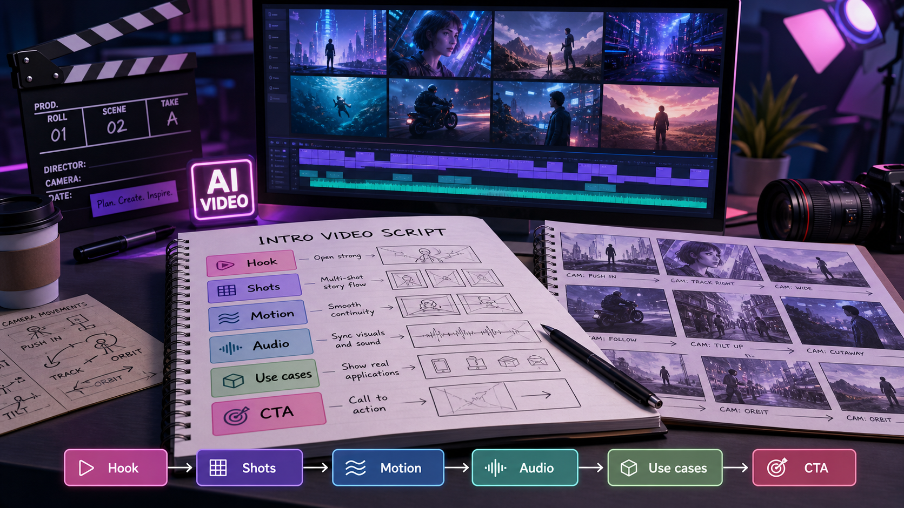

SEEDANCE 2.5 VIDEO SCRIPT
Seedance 2.5 model introduction video script for creators and marketers.
Use this page as a ready-to-adapt model intro video outline: explain what Seedance 2.5 changes, why multi-shot consistency matters, and how teams can plan campaign-ready AI video assets.

Summary for fast readers
- A strong model intro video needs more than feature claims: it needs a viewer problem, visual proof, examples, limitations, and CTA.
- Use the script as a production outline for hook, multi-shot demonstration, audio direction, creator use cases, and final review.
- Keep model capability claims source-aware and dated because availability, resolution, and product behavior can change.
EDITORIAL METHOD
How this script keeps the model intro credible.
This article separates three things: public release claims about Seedance 2.5, practical video-script guidance for creators and marketers, and ChatArt Pro workflow recommendations. That separation matters because model availability, output controls, resolution, pricing, and commercial terms can change after a release is syndicated or summarized by third parties.
The script below is therefore written as a production template, not a guarantee of live product behavior. Before recording or publishing a model intro video, verify current Seedance 2.5 access, supported controls, commercial terms, and whether the exact model route is available in your working tool.
MODEL ANGLE
Seedance 2.5 is being framed around longer stories and stronger continuity.
A June 2026 syndicated release on Barchart describes Seedance 2.5 as an upgrade focused on multi-shot storytelling, improved character and brand consistency, director-style camera control, stronger motion stability, and native audio synchronization. For creator and marketing teams, the important shift is simple: move from disconnected AI clips toward more coherent scenes with the same product, person, wardrobe, brand style, and story rhythm across shots.
VIDEO POSITIONING
Use this intro video to explain the model in business terms.
Problem
AI video often looks impressive in one shot, then loses the subject, product, or brand style in the next shot.
Promise
Seedance 2.5 is reported to improve multi-shot continuity so a sequence can feel more like one planned story.
Audience
Creators, marketers, e-commerce teams, filmmakers, and social teams planning short narrative assets.
Use case
Product launches, story ads, branded reels, founder videos, previsualization, and campaign concept testing.
60-SECOND SCRIPT
A ready-to-record Seedance 2.5 model introduction video.
| Time | Visual direction | Voiceover |
|---|---|---|
| 0-5s | Fast montage: disconnected AI clips jump between different products, faces, and lighting. | AI video is easy to generate. The hard part is making the story stay consistent from shot to shot. |
| 5-12s | Title card: “Seedance 2.5: multi-shot AI video generation.” | Seedance 2.5 is being introduced as a next step for multi-shot AI video: longer scenes, stronger continuity, and more cinematic control. |
| 12-22s | Three connected shots of the same product: wide shot, hand interaction, close-up detail. | Instead of treating every clip as a separate experiment, Seedance 2.5 focuses on keeping characters, products, clothing, and brand details aligned across a sequence. |
| 22-32s | Camera labels on screen: push-in, dolly, handheld tracking, aerial pan. | For creators and marketers, that means prompts can work more like a shot list: subject, camera movement, lighting, scene order, audio, and final frame. |
| 32-42s | Dialogue or narration moment with sound-wave overlay and lip-sync callout. | The release also highlights native audio synchronization and tighter lip-sync, which can reduce the amount of editing needed for story ads or creator videos. |
| 42-52s | Marketing storyboard: product launch, e-commerce clip, branded reel, campaign variant. | The best fit is work where consistency matters: product videos, branded content, short narrative ads, and pre-production previews. |
| 52-60s | ChatArt Pro workflow screen concept: brief, references, prompt, generated asset pack. | Start with one clear creative brief, write it like a scene sequence, and turn the strongest direction into campaign-ready video assets. |
SHORT SOCIAL VERSION
A 20-second version for Reels, Shorts, and TikTok.
Most AI videos fail when the second shot no longer matches the first.
Seedance 2.5 is reported to focus on multi-shot storytelling, stronger identity consistency, camera control, and native audio sync.
For creators and marketers, the workflow becomes less about one lucky clip and more about planning a sequence: opener, product detail, motion beat, and final CTA frame.
Write your next AI video prompt like a shot list, then build the surrounding campaign assets in ChatArt Pro.
KEY CAPABILITIES TO EXPLAIN
What the audience should remember about Seedance 2.5.
Multi-shot storytelling
The release positions Seedance 2.5 around longer, connected video sequences rather than isolated one-shot clips.
Cross-shot consistency
Reported improvements focus on keeping characters, products, brand colors, wardrobe, and scene style more stable across shots.
Director-style camera control
Prompts can describe cinematic moves such as push-in, dolly, handheld tracking, and aerial pan to guide the model like a mini shot list.
Audio and lip-sync direction
The release highlights native audio synchronization, tighter lip-sync, ambience, and richer sound design for dialogue or story-driven clips.
Motion and physics stability
Reported upgrades include reduced flicker, less warping, and more reliable motion for product and character sequences.
Marketing-friendly continuity
For campaign work, continuity helps the same SKU, person, brand palette, and message survive across multiple creative cuts.
SEEDANCE 2.5 VS SEEDANCE 2
How to explain the upgrade without overcomplicating it.
| Topic | Seedance 2 | Seedance 2.5 positioning |
|---|---|---|
| Best fit | Multimodal video production and reference-led campaign clips. | Longer story-driven sequences where identity and brand continuity matter more. |
| Shot structure | Strong for video generation from detailed prompts and references. | Reportedly stronger for connected multi-shot narratives from a cohesive prompt. |
| Consistency | Useful for controlled product or creator scenes. | Reported improvements in character, product, wardrobe, and brand identity across shots. |
| Audio | Public Seedance materials emphasize audio-video generation. | The release highlights tighter lip-sync and richer synchronized sound design. |
| Prompt style | Scene prompt plus references. | Shot-list prompt: sequence, camera moves, continuity locks, audio notes, and final frame. |
PROMPT FOR THE INTRO VIDEO
Use this prompt to generate visuals for the model introduction.
Create a clean cinematic product-education video introducing Seedance 2.5 as a multi-shot AI video model. Show a creator planning a sequence on a laptop, then connected shots of the same product moving through a studio scene: wide shot, close-up, handheld tracking, final CTA frame. Use consistent product identity, stable lighting, subtle UI overlays for “multi-shot,” “consistency,” “camera control,” and “audio sync.” Modern purple-blue gradient accents, premium SaaS style, clear space for captions.
Create a three-shot sequence for a product launch: shot one shows the product on a reflective surface, shot two shows a hand interacting with the same product, shot three moves into a close-up detail with the same brand color and lighting. Keep product shape, logo placement, color palette, and studio environment consistent across all shots.
STORYBOARD
A practical scene plan for your Seedance 2.5 intro video.
- Open with the pain: show inconsistent AI clips and call out subject drift.
- Name the model: introduce Seedance 2.5 as a multi-shot AI video generation upgrade.
- Show the continuity: repeat the same product, person, or brand style across three connected shots.
- Show camera language: label the moves so viewers understand director-style prompting.
- Show marketing value: connect the output to ads, launch videos, e-commerce clips, and social campaigns.
- Close with workflow: invite the viewer to plan the prompt, create the clip, and build the full asset pack.
DELIVERY CHECKLIST
Review the Seedance 2.5 intro before publishing.
Claim source
Every capability claim should map back to a dated source or be phrased as something to verify.
Shot continuity
The demo should visibly show the same product, character, brand color, or scene style across multiple shots.
Workflow clarity
The viewer should understand how to move from prompt, to clip, to thumbnail, caption, and campaign asset pack.
Limitation note
The video should mention that model access, output controls, and commercial terms can change.
WHEN TO ADAPT THE SCRIPT
Change the angle based on the audience.
| Audience | Lead with | Proof to show | CTA angle |
|---|---|---|---|
| Creators | Less reshooting, more story continuity | Three connected social shots | Plan a short creator sequence |
| Marketers | Brand and product consistency | Same SKU across multiple ad scenes | Build a launch asset pack |
| E-commerce teams | Product detail and controlled visual style | Close-up, hand interaction, final product frame | Create product video variants |
| Agencies | Faster concept review | Storyboard-to-video draft sequence | Prepare client-facing concepts |
FAQ
Seedance 2.5 model introduction questions.
What is the main story of Seedance 2.5?
The main story is consistency across multi-shot video: longer sequences, stronger subject identity, better camera control, and more integrated audio direction.
Is Seedance 2.5 the same as Seedance 2?
No. Seedance 2 remains a useful multimodal video route, while Seedance 2.5 is being positioned as a further upgrade for longer, more coherent multi-shot narratives.
Should I claim ChatArt Pro supports Seedance 2.5?
Only if the model is visible in the ChatArt Pro app. Until then, describe this page as a model-introduction script and use ChatArt Pro to prepare video briefs, prompts, and surrounding campaign assets.
What is the best use case to show in the video?
A product launch sequence is easiest to understand: one product, three shots, consistent logo, consistent lighting, camera movement, and a final CTA frame.
SCRIPT QUALITY
What makes a model intro video credible.
A credible model introduction does not simply list features. It shows what a creator or marketer can do, where the model fits in a workflow, and what should be checked before a clip is used in paid or public campaigns.
- Open with the job. Name the asset problem: product teaser, launch reveal, creator post, or ad variation.
- Show visual proof. Use storyboarded examples rather than abstract capability claims.
- Name limits carefully. Call out continuity, text accuracy, audio fit, and commercial review checks.
- End with a workflow CTA. Invite the viewer to build a real asset pack, not just admire the model.
CREATE THE ASSET PACK
Use this model intro script as the start of a campaign asset workflow.
Turn the Seedance 2.5 explanation into a video brief, thumbnail direction, caption set, ad hook, and launch post inside ChatArt Pro. Confirm current model availability in the app before promising a specific generation route.